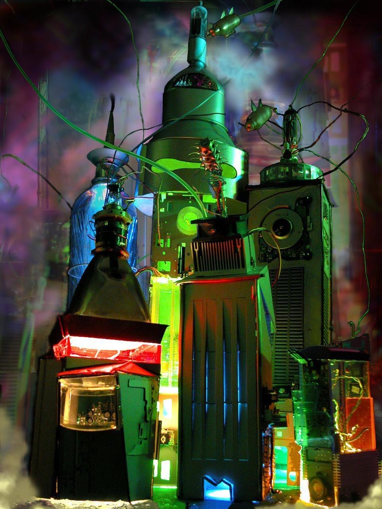

Città elettronica futuristica
Questa è stata sicuramente una delle mie prime opere realizzate con materiali di scarto, l’ho realizzata per il Degree Show nell’ultimo anno universitario (2005). Avevo recuperato dai miei compagni di studio telefoni rotti, televisori e device in disuso. Con cavi, lampadine e plastiche ho costruito il modellino scenografico di una città elettronica futuristica.